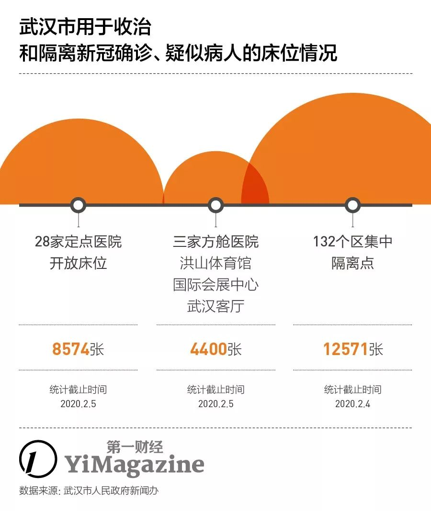
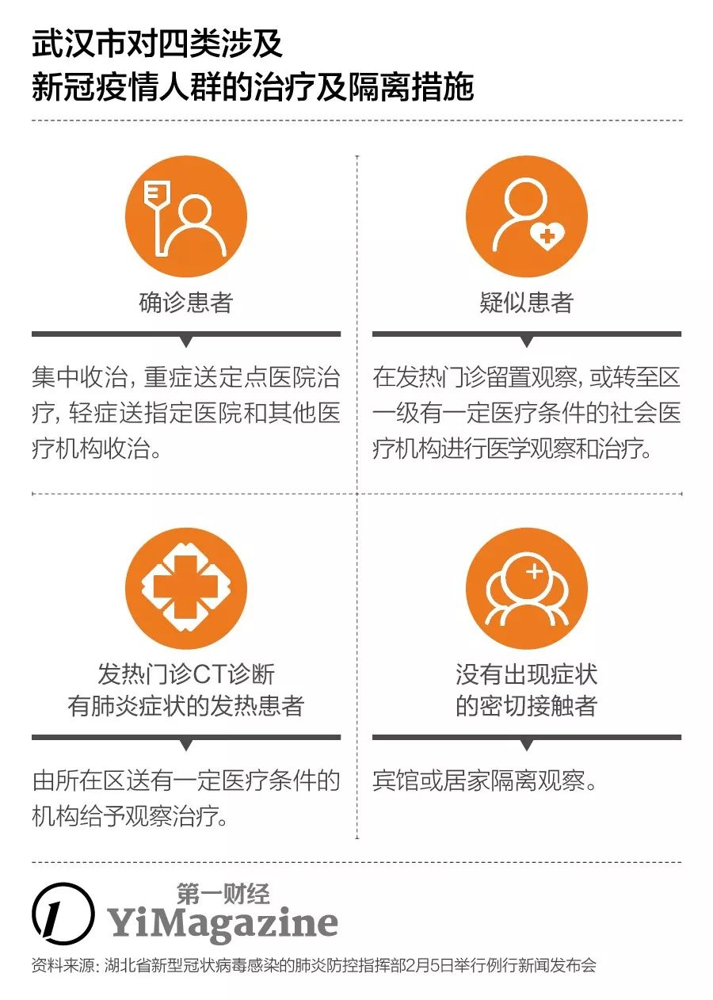

武汉“四类人员”集中收治第一日：“我们没有被抛弃！”
原文链接 备份链接 在医学专家们看来，集中收留、隔离是第一步。接下来对疑似病患的确诊、分类诊治、收治入院，将是对医疗、物资、人员分配等多重资源配置能力的综合考验，相信各方面群策群力可以渡过难关 文 |《财经》 …

一床难求，这是治愈率与收治率失衡的结果
记者 | 吴洋洋
编辑 | 王姗姗
图表资料整理 | 实习记者 文思敏、袁颖
制图 | 程 星
“2月5日当日，市指挥部宣传组对网友在各类互联网平台发布本人或亲友的求助信息做核实，有33条求助信息已经得到相关区和部门的积极响应，病患已经得到了妥善安置。”
这条消息出现在2月6日微信公众号“武汉发布”上。该公号的主体，正是武汉市人民政府新闻办公室。
2月5日晚上，72岁的陈令军一家接到了好几个电话，包括社区居委会、市卫健委，其中还有一通是来自市纪委的督导组。他们打电话是同一个原因：看到了陈令军的外孙2月3日在新浪微博上发布的“肺炎患者求助”。
那则微博中讲述了陈令军从发病到确诊已经过去13天却始终无法被安排入院治疗的紧急状况。
陈令军在1月22日开始发烧、被医院诊断为肺部感染后被要求居家隔离观察，此后便进入了一环环漫长的排队等待：第7天（1月28日），他被鉴定为病毒性肺炎却排不上核酸检测；第11天（2月1日）做上了病毒核酸检测，结果显示为阳性，确诊为新冠肺炎，但是取报告又要等2天的时间；最终在发病后的第15天，陈令军等到了定点医院的治疗床位。
两天之内，反映陈令军危急病情的这篇微博，被转发了1.4万多次。与此同时，陈令军的确诊报告也递交到了社区的居委会，等待床位安排。
救命的微博
“发热患者需要先向所在社区的‘网格员’报告，然后去社区医院初筛。”一家武汉新冠肺炎定点医院的医生向《第一财经》YiMagazine介绍说，”符合条件的，社区会派车将这部分患者送到所在片区的定点医院，由定点医院分辨患者是疑似还是可以确诊。确诊的患者会被收入院，如果没有床位就上报给武汉市疫情防控指挥部。”
网格员，是武汉市此次肺炎疫情防控中在社区管理网络环节的最基层角色，通常由各社区居委会的工作人员担任。每位网格员定向管理一栋或两栋楼的住户，负责收集辖区住户的生活物资协助和疫情信息的通报。
但随着新增确诊病例每天以数百上千的速度攀升，以网格员为沟通起点的这套分诊与安排就医的流程难以承接。

“1月28日，在武汉同济医院光谷分院看完发热门诊后，要住院就已经收不进去了。”陈令军的女婿李琦对《第一财经》YiMagazine说，当地的社区医院更是没有收治能力，29日之前连发热病人都不接，虽然早在1月26日，武汉市的服务公号“武汉发布”上就公示了武汉各区的分诊流程，要求社区医院承接各自社区发热患者的初筛服务。
李琦从来没有搞清楚过医院的床位分配机制。他只能每天给社区的网格员打电话询问“有没有床位”，但是从没有人告知过他，陈令军究竟排的是多少号，更没有排号进展。
陈家在网上看新闻得知，武汉正在洪山体育馆、武汉客厅和武汉国际会展中心建三所“方舱医院”，总计4400个床位，加上后续将在武汉全民健身中心、武汉体育馆、武汉国际博览中心等多处开建的类似临时医院，新增床位数将达到上万个。但同样，没有人告诉这个家庭，已经确诊的陈令军何时能排得上，或者如何排。

2月5日，患者在江汉方舱医院内。图片来源：新华社。新华社记者 熊琦 摄
按前述分诊流程，陈令军的确诊信息，应该会由社区居委会上报给关山街街道办事处，最终上报武汉市疫情防控指挥部，而该指挥部也会实时掌握武汉市28家定点医院、总计八千多张床位使用情况的动态数据，并由此对社区上报的确诊患者做床位分配。非常时期，医院对床位分配也不再有决定权。

如果严格按照这套流程执行，陈令军应该可以等到他的床位。截至2月3日——陈令军拿到诊断书那天，武汉确诊病例为6384例，而当日市卫健委公布动态数据显示称，全市28个定点医院开放床位8254张。
2月4日，社区居委会人员提出送陈令军去附近的隔离酒店隔离，陈令军的家属因担心那里的救治条件有限而拒绝了。2月5日上午，陈令军独自前往社区居委会要求安排床位，被居委会劝返。到了晚上，这家人得到的新消息又变成“社区不管了”，让病人家属“自己想办法找医院”。
这个消息把陈令军一家打入谷底。然而几个小时后，事情突然又出现转机，社区网格员打电话通知“床位调度到了”，陈令军当晚被送去了湖北省人民医院（东院）。
“做不好要动刀子”
据《财经》杂志报道，2月5日上午，武汉市卫健委召开了一次“重要”会议，会上提出：各区要在未来两天内，最晚至2月7日，完成武汉市所有疑似病例的核酸检测，以及争取在2月5日晚24时之前收治所有确诊病人。
这篇报道写道：“‘今天的会非常重要，不能有任何丝毫理解上的差误，如果出现任何问题，会追责，不是吓唬大家。总书记前天的会议已经提了，做不好要动刀子。’2月5日上午，在武汉市卫健委10楼会议室中一位发言人称。”
就连当事人也难以确认，陈令军的命运在几个小时内发生的这次大转弯，究竟是因为孙子的热门微博起了作用，还是出于这条硬性任务。
1月27日开始发病的冯青夫妇，截止2月7日上午11:50分还在隔离点——他们没有发微博，目前主要通过微信群和校友在求助。
武汉1月23日就封城了，没有车辆可以从高速路口通过。突发高烧后，冯青徒步从临近机场的黄陂区滠口路走回武汉市区，休息一晚，第二天骑自行车接回同样高烧的妻子。在武汉中山医院做完核酸检查，确诊为新冠肺炎。同样是向社区居委会上报了确诊报告，询问床位信息，社区让冯青打120，120让他找社区。
2月5日晚，两人病情恶化，通过社区安排到了120急救车，然而这辆急救车只能将他们送到隔离点。2月6日凌晨五点多，没有医疗资源的隔离点又将二人送去刚刚开始接收“轻症”确诊患者的方舱医院。方舱医院判断夫妇二人“病情太重”，而此时市区医院仍然没有床位，因此再次将他们送回隔离点。
根据2月7日湖北省对外通报的最新疫情数据，2月6日，武汉市继续新增确诊病例1501人，需要被兑付医疗资源的还不包括那些仍在“疑似”名单上的患者。
“我们不会随便报疑似病例，而疑似病例就是可能性很大的患者。”前述武汉定点医院要求匿名的医生对《第一财经》YiMagazine说。
自1月22日起，武汉不再单独公布本市肺炎疫情数据，而整个湖北省发布的疫情数据中，也从未提及疑似病例的进展。根据国家卫健委公布的数据，2月6日全国范围确诊病例首次突破3万，达到31161例，疑似病例达到26359例。同日，由湖北省通报的武汉市确诊病例11618例。如果按武汉市市长周先旺在1月26日接受央视记者采访时提及的45%确诊率，武汉的新冠疑似病例及发热患者至少还有20000例。而武汉市市委副书记胡立山在2月5日的疫情发布会上则提及，武汉市当前共有20629人居家隔离。
如果再不及时干预和实施专业隔离，这部分人群很可能会一步步从个案变成家庭传染，意味着武汉城内的病例数字将会翻倍增长。
床位去哪儿了？
1.缺床位，缺物资，也缺医护
单从数字上看，武汉定点医院和床位数量已经不足以收治全部已确诊病人。截止2月5日，包括已经投入使用的火神山医院，武汉28所定点医院的开放床位为8574张，而确诊病例已经过万。
武汉市卫健委发布通知，各定点收治医院从即日起，原则上只能收治确诊的重症病例和危重症病例，以及疑似的危重症病例。不符合上述条件的病人，需送往社区隔离点或方舱医院收治。
已经建成使用的三家方舱医院，规划床位4400张。因此，短期内还有相当大比例的疑似病例还住不进方舱医院，而只能暂时安置于区一级利用酒店、党校设立的隔离点。

前述要求匿名的医生表示，若要做到“应收尽收”，医院方面唯一的做法就是增加床位。他所在的医院在被确定为定点医院后，最初只开放了四层病区，床位265张，但随后不断扩大，逐渐将整栋大楼的普通病房逐层改造为适用于收治传染病人的隔离病房，床位数增至600个。
“改造病房的速度不仅有赖施工进度，更取决于呼吸配套的急救设备等医疗物资的到位速度。”这位医生说。从武汉官方在新闻发布会上不断提及医疗物资处于的“紧平衡”状态来看，显然后一个因素成为医院床位扩张的主要瓶颈所在。
正在不断增设的方舱医院，未来会是个可观的增量。如果能新增1万张床位，有助于解决患者的隔离和及时救治，但是对医护人员数量也提出了挑战。

2月5日的新闻发布会上，胡立山证实，中央指导组紧急抽调二十个省的大型三级综合医院的医护人员共2000人，将陆续抵达武汉，配备在三家已落成的方舱医院。但是，本着“应收尽收”的原则，方舱医院的数量和床位数一定会按确诊轻症和疑似病例的实际数字继续扩大，到那时，医护人员与病人的配比还会近一步被稀释。
作为对比，因疫情而临时兴建的定点医院，火神山医院设有1000个床位，配备的医护人员数量是1400人。
 2月2日火神山医院竣工 | 图片来源：《人民日报》
2月2日火神山医院竣工 | 图片来源：《人民日报》
2.低周转率：床位20天才周转一次
根据2月4日国家卫健委医政医管局副局长焦雅辉在当日疫情发布会上公布的数据，当前湖北之外的全国出院患者平均住院日为9天多，而湖北省患者平均住院日为20天。
按照国家发布的《新型冠状病毒感染的肺炎诊疗方案》提及的出院标准，患者临床症状消失、经过两次核酸检测后即可出院。但是焦雅辉提及“在武汉有更严格的措施，所有的这些标准都符合以后，还要在医院再观察10至12天，因此导致了湖北省和武汉市出院患者平均住院日时间比较长。”
执行这种高标准，可以减少患者的复发率，但是也降低了床位的周转率。以平均20天的住院时长和其中包括10至12天的观察期来计算，武汉既有的8000多张开放床位数量相当于又少了一半。
目前看，将这部分基本已经治愈患者转移至特定隔离点，而非留在床位紧张的一线医院，也许会是更好选择。
3. 居家隔离模式进一步扩大了感染人数
在2003年非典结束后，彼时负责指挥北京抗击疫情的代市长王岐山接受央视访问时曾总结，他接手疫情管理的首要工作是“切断传染源”，因为对于尚无特效药的新型传染病而言，正确的隔离比治疗还要重要。在给自己制定的KPI指标里，除了“治愈率”，王岐山还增加了“收治率”。
直到进入2月——距离官方首次关注到疫情发现已经过去了30天，武汉才真正开始关心“收治率”的问题，大范围启动建设方舱医院和区一级的隔离点，对已经长期居家观察的病患和密切接触者实施更为专业有效的隔离和治疗措施。
1月23日封城后，武汉只是切断了对外的传染，对于仍然生活在城内的900万居民内部，并没有很好地做到切断传染源。
居家隔离导致了以家庭为单位的传染。《第一财经》YiMagazine采访的几个家庭，都在不同程度出现了家庭成员之间的传染。
陈令军一家，利用三处居所努力实现隔离，但仍有两人出现发热症状。
拥有6口人、两处住所的胡磊一家人则更不幸。胡磊父亲在1月23日第一个发烧，1月25日胡磊夫妻二人和两个儿子也都出现了发热症状，最后是他的母亲。一家六口人除了两岁的小儿子，全部被判新冠疑似病例。1月29日之后，用于居家隔离的药，也已经不能保证全家人都能按时吃上。10天后的2月2日，胡磊父亲以疑似的身份过世。
根据湖北疫情通报会上提及的数字，截至2月5日武汉市共有20629人居家隔离，这中间既包括像陈令军那样确诊了但等不到床位的“合格”病人，也包括像胡磊父亲这样等不及确诊的疑似患者，还有像陈令军的妻子那样发烧了、但连疑似诊断也还没有拿到的人，他们要么传染了家人，要么是被家人传染的。
2月5日，国家卫健委发布了第五版的《新型冠状病毒感染的肺炎诊疗方案》，相较于第四版，针对湖北省的诊断标准中，新增“临床诊断”分类——将原本疑似病例中具有肺炎影像学特征的，单独划分为“临床诊断”病例，与原先的“疑似病例”和“确诊病例”形成三个管理类别。这个做法也是为了更有效地甄别传染源，争取实现早隔离。

但这一更宽松的诊断标准，也意味着将把更大的感染病人数字，纳入医疗机构收治范围，而武汉的医疗资源和“收治率”KPI也将因此面临更大的压力。2月3日起，社交媒体上开始出现“转移病人至其他尚有医疗资源省市救治”的讨论，但各级官方在疫情通报会上尚未有所回应。
湖北省人民政府副省长杨云彦6日表示，针对武汉市一床难求的问题，将采取多种紧急措施来增加床位的投放。一是通过设置集中隔离点，来分解定点医院的床位压力。二是省疫情防控指挥部，积极向国家相关单位请求支援，保障武汉定点医院和集中隔离点正常运转。三是要求武汉市根据实际，及时增加定点医院，并及时向社会公布。四根据省疫情防控指挥部的要求，对不能收治的疑似或确诊患者，要做好登记并引导患者去其他定点医院就诊。
（应采访对象要求，文中陈令军、李琦、冯青为化名）
本文版权归第一财经所有，
未经许可不得转载或翻译。

原文链接 备份链接 在医学专家们看来，集中收留、隔离是第一步。接下来对疑似病患的确诊、分类诊治、收治入院，将是对医疗、物资、人员分配等多重资源配置能力的综合考验，相信各方面群策群力可以渡过难关 文 |《财经》 …
原文链接 备份链接 为防止居家隔离造成交叉感染，从根本上控制感染源，武汉开始对确诊、疑似、发热及密切接触者进行集中收治和隔离。 具体执行中，劝服人员前往隔离点的工作很难。他们期待：能够对患者进行治疗，或者形成一条入院检测和就医的绿色通 …
原文链接 备份链接 在医学专家们看来，集中收留、隔离是第一步。接下来对疑似病患的确诊、分类诊治、收治入院，将是对医疗、物资、人员分配等多重资源配置能力的综合考验，相信各方面群策群力可以渡过难关 2月3号上午8点，人们在七医院门口排队等待核 …
原文链接 备份链接 对于封城后的武汉及周边地区的人们来说，社区的存在感从未如此强烈，“隔离”成了生活中绕不开的关键词。今天的“武汉日常”每日书中，三位作者向大家展现了生活在疫区的真实感受。确诊和疑似数据增长的背后，是紧缺的医疗资源，是充 …
原文链接 备份链接 武汉市各区正在加紧把所有发热人员集中隔离，并进行全部发热人员的检测，目的是让疫情全部暴露出来，之后疫情防控也将从“攻坚战”转至“歼灭战” 图/法新 文 |《财经》特派武汉记者 言清 王小 编辑 | 王小 “今天的会非 …